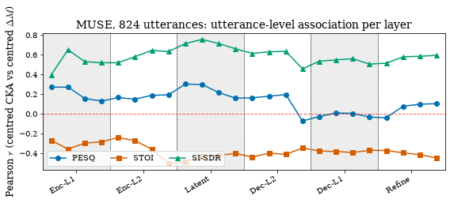
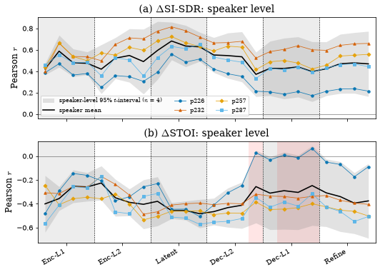

Representational change and perceptual quality#
Does layer-wise CKA carry information on how much a model improves output quality? Both CKA and the metric improvement are driven by the degradation level, so a raw per-utterance correlation mostly restates the SNR sweep. This chapter centres both quantities within each (layer, level) cell and correlates the residuals for PESQ, STOI and SI-SDR at 824-utterance scale (paper Fig. 4), then repeats the association with the speaker as the sampling unit (paper Fig. 5): the VoiceBank-DEMAND test split holds two speakers and a second sweep adds two more, so the paper reports per-speaker values, their sign agreement and their spread rather than a population-level test, and the decoder-side PESQ lobe of the utterance-level figure does not survive the change of unit. A final check asks whether the PESQ gain is an artefact of the metric’s ceiling.
Runtime: under 30 seconds on any device.
import sys
from pathlib import Path
REPO = Path.cwd().resolve()
while REPO.name != "SE-Probe" and REPO.parent != REPO:
REPO = REPO.parent
if str(REPO) not in sys.path:
sys.path.insert(0, str(REPO))
def _rel(p):
"""Repo-relative path for display (absolute only if outside the repo)."""
try:
return p.relative_to(REPO)
except ValueError:
return p
from se_probe.device import device_info, get_device
from se_probe.plotting import apply_paper_rcparams
apply_paper_rcparams()
DEVICE = get_device()
print(device_info(DEVICE))
import pandas as pd
DATA_DIR = REPO / ("results_df" if (REPO / "results_df").exists() else "results_demo")
TABLES = REPO / "results_tables"
print(f"Using data from: {_rel(DATA_DIR)}")
print(f"Paper tables from: {_rel(TABLES)}")
Detected device: cpu
Using data from: results_demo
Paper tables from: results_tables
Utterance-level correlations at 824 utterances#
A per-utterance correlation between layer-wise CKA and the PESQ gain is dominated by SNR: both quantities track degradation severity. The level effect is removed by subtracting from each quantity the mean of its (layer, SNR) cell, so the residual correlation asks whether an utterance whose representation moved more than its peers at the same level also gained more quality than they did. results_tables/perceptual/sec3b_824_v2_perlayer.csv holds this per-layer Pearson correlation between centred CKA and the centred metric improvement over the pooled 5 noises x 41 SNRs x 824 utterances (n = 168,920 observations per layer) for three models and six metrics. For MUSE, SI-SDR is positive at every probed layer, STOI negative at every layer, and PESQ mixed in sign: small and positive across the encoder and latent blocks, largest at the first encoder layer, and increasingly negative through the decoder.
sec = pd.read_csv(TABLES / "perceptual/sec3b_824_v2_perlayer.csv")
muse = sec[sec.model == "muse"]
ranges = muse.groupby("metric")["pearson"].agg(["min", "max"]).round(3)
display(ranges)
print(f"SI-SDR utterance-level range [{ranges.loc['SI-SDR','min']:+.3f}, {ranges.loc['SI-SDR','max']:+.3f}] "
"(shipped table sec3b_824_v2_perlayer.csv; the paper reports the speaker-level 0.17 to 0.60 and r = 0.40 [0.12, 0.68], not this range)")
assert abs(ranges.loc["SI-SDR", "min"] - 0.396) < 5e-4 and abs(ranges.loc["SI-SDR", "max"] - 0.756) < 5e-4
assert ranges.loc["STOI", "max"] < 0 and ranges.loc["SI-SDR", "min"] > 0
assert ranges.loc["PESQ", "min"] < 0 < ranges.loc["PESQ", "max"]
import matplotlib.pyplot as plt
import numpy as np
from se_probe.layers import layout
from se_probe.plotting import OKABE_ITO, depth_axis
palette = {"PESQ": OKABE_ITO["blue"], "STOI": OKABE_ITO["vermillion"], "SI-SDR": OKABE_ITO["green"]}
markers = {"PESQ": "o", "STOI": "s", "SI-SDR": "^"}
fig, ax = plt.subplots(figsize=(8, 3.4))
depth_axis(ax, layout("muse"))
for m in ["PESQ", "STOI", "SI-SDR"]:
t = muse[muse.metric == m].sort_values("layer_idx")
ax.plot(t.layer_idx, t.pearson, marker=markers[m], color=palette[m], label=m)
ax.axhline(0, color="red", ls="--", lw=0.9, alpha=0.7)
ax.set_ylabel("Pearson $r$ (centred CKA vs centred $\\Delta M$)")
ax.set_title("MUSE, 824 utterances: utterance-level association per layer")
ax.legend(loc="lower left", ncol=3)
plt.tight_layout();
| min | max | |
|---|---|---|
| metric | ||
| DNSMOS-BAK | -0.719 | -0.432 |
| DNSMOS-OVRL | -0.629 | -0.352 |
| DNSMOS-SIG | -0.540 | -0.222 |
| PESQ | -0.072 | 0.302 |
| SI-SDR | 0.396 | 0.756 |
| STOI | -0.503 | -0.240 |
SI-SDR utterance-level range [+0.396, +0.756] (shipped table sec3b_824_v2_perlayer.csv; the paper reports the speaker-level 0.17 to 0.60 and r = 0.40 [0.12, 0.68], not this range)

The speaker as the sampling unit#
spk_v2__per_speaker_all.csv holds one correlation per speaker per layer, recentred within the speaker, for the two probing sweeps (780: p226/p287; 824: p232/p257). The paper pools the four speakers of the MUSE sweeps and reports the speaker mean with a Student-t interval over speakers (speaker_summary_from_published); the shipped spk_v2__speaker_level_all.csv (scope pooled4) is the same computation. At the deepest first-decoder layer (Dec-L2.3) the utterance-cluster bootstrap interval has width 0.041 while the speaker-level interval has width 0.505, twelve times wider and spanning zero.
from se_probe.perceptual import speaker_summary_from_published
ps = pd.read_csv(TABLES / "perceptual/spk_v2__per_speaker_all.csv")
ps_muse = ps[ps.model == "muse"]
spk4 = speaker_summary_from_published(ps_muse, scope="pooled4")
ref = pd.read_csv(TABLES / "perceptual/spk_v2__speaker_level_all.csv")
ref4 = ref[(ref.scope == "pooled4") & (ref.model == "muse")]
chk = spk4.merge(ref4, on=["metric", "layer_idx"], suffixes=("", "_ref"))
print(f"agreement with the shipped pooled4 table: max |d mean_r| = {(chk.mean_r - chk.mean_r_ref).abs().max():.1e}, "
f"max |d spk_lo| = {(chk.spk_lo - chk.spk_lo_ref).abs().max():.1e}")
assert (chk.mean_r - chk.mean_r_ref).abs().max() < 1e-9
def spk_row(metric, idx):
r = spk4[(spk4.metric == metric) & (spk4.layer_idx == idx)].iloc[0]
per = ps_muse[(ps_muse.metric == metric) & (ps_muse.layer_idx == idx)]
return r, per
r, per = spk_row("PESQ", 15)
ut = pd.read_csv(TABLES / "perceptual/spk_v2__utterance_level_all.csv")
u = ut[(ut.sweep == 780) & (ut.model == "muse") & (ut.metric == "PESQ") & (ut.layer_idx == 15)].iloc[0]
w_utt, w_spk = u.utt_hi - u.utt_lo, r.spk_hi - r.spk_lo
print(f"PESQ at {r.label}: speakers {dict(zip(per.speaker, per.r.round(2)))}; "
f"mean r = {r.mean_r:+.2f}, spread [{r.spk_lo:+.2f}, {r.spk_hi:+.2f}] (paper -0.21 [-0.46, +0.05])")
print(f" utterance-cluster interval width {w_utt:.3f} (paper 0.041) vs speaker-level width {w_spk:.3f} (paper 0.505), ratio {w_spk / w_utt:.1f}x")
assert abs(r.mean_r - (-0.21)) < 5e-3 and abs(r.spk_lo - (-0.46)) < 5e-3 and abs(r.spk_hi - 0.05) < 5e-3
assert abs(w_utt - 0.041) < 5e-4 and abs(w_spk - 0.505) < 5e-4
assert (per.r > 0).sum() == 1 and (per.r < 0).sum() == 3 # signs split three to one
r0, per0 = spk_row("PESQ", 0)
print(f"PESQ at {r0.label}: all four positive = {(per0.r > 0).all()}; mean r = {r0.mean_r:+.2f}, spread [{r0.spk_lo:+.2f}, {r0.spk_hi:+.2f}] (paper +0.29 [+0.20, +0.38])")
assert (per0.r > 0).all() and abs(r0.mean_r - 0.29) < 5e-3 and abs(r0.spk_lo - 0.20) < 5e-3 and abs(r0.spk_hi - 0.38) < 5e-3
sisdr_min = ps_muse[ps_muse.metric == "SI-SDR"].groupby("layer_idx").r.min()
print(f"SI-SDR positive in all four speakers at all {int((sisdr_min > 0).sum())} layers (paper: all 24)")
assert (sisdr_min > 0).all() and len(sisdr_min) == 24
rs, pers = spk_row("SI-SDR", 19)
print(f"SI-SDR at {rs.label}: spread of speakers [{pers.r.min():.2f}, {pers.r.max():.2f}] (paper 0.17 to 0.60); "
f"r = {rs.mean_r:.2f} [{rs.spk_lo:.2f}, {rs.spk_hi:.2f}] (paper 0.40 [0.12, 0.68])")
assert abs(pers.r.min() - 0.17) < 5e-3 and abs(pers.r.max() - 0.60) < 5e-3
assert abs(rs.mean_r - 0.40) < 5e-3 and abs(rs.spk_lo - 0.12) < 5e-3 and abs(rs.spk_hi - 0.68) < 5e-3
stoi = ps_muse[ps_muse.metric == "STOI"].pivot_table(index="layer_idx", columns="speaker", values="r")
labels = spk4[spk4.metric == "STOI"].set_index("layer_idx").label
flipped = [labels[i] for i in stoi.index if not (stoi.loc[i] < 0).all()]
print(f"STOI: a speaker reverses the sign at {flipped} (paper: Dec-L2.3, Dec-L1.1, Dec-L1.3)")
assert flipped == ["Dec-L2.3", "Dec-L1.1", "Dec-L1.3"]
covers_zero = spk4[(spk4.metric == "STOI") & ~spk4.excludes_zero].label.tolist()
print(f"STOI: the speaker band covers zero at {covers_zero} (paper adds Dec-L1.2)")
agreement with the shipped pooled4 table: max |d mean_r| = 0.0e+00, max |d spk_lo| = 0.0e+00
PESQ at Dec-L2.3: speakers {'p226': -0.32, 'p287': -0.31, 'p232': -0.22, 'p257': 0.02}; mean r = -0.21, spread [-0.46, +0.05] (paper -0.21 [-0.46, +0.05])
utterance-cluster interval width 0.041 (paper 0.041) vs speaker-level width 0.505 (paper 0.505), ratio 12.2x
PESQ at Enc-L1.0: all four positive = True; mean r = +0.29, spread [+0.20, +0.38] (paper +0.29 [+0.20, +0.38])
SI-SDR positive in all four speakers at all 24 layers (paper: all 24)
SI-SDR at Dec-L1.3: spread of speakers [0.17, 0.60] (paper 0.17 to 0.60); r = 0.40 [0.12, 0.68] (paper 0.40 [0.12, 0.68])
STOI: a speaker reverses the sign at ['Dec-L2.3', 'Dec-L1.1', 'Dec-L1.3'] (paper: Dec-L2.3, Dec-L1.1, Dec-L1.3)
STOI: the speaker band covers zero at ['Dec-L2.3', 'Dec-L1.1', 'Dec-L1.2', 'Dec-L1.3'] (paper adds Dec-L1.2)
Figure: the quality association with the speaker as the unit#
Black: the speaker mean; grey band: its 95% t-interval over the four speakers (describing spread rather than testing); coloured dots: the four speakers; red columns: layers whose band covers zero. (a) dSI-SDR is positive in all four speakers at every layer. (b) dSTOI is negative in all four except at Dec-L2.3, Dec-L1.1 and Dec-L1.3.
SPK_COLOR = {"p226": OKABE_ITO["blue"], "p287": OKABE_ITO["sky"], "p232": OKABE_ITO["vermillion"], "p257": OKABE_ITO["orange"]}
SPK_MARK = {"p226": "o", "p287": "s", "p232": "^", "p257": "D"}
fig, axes = plt.subplots(2, 1, figsize=(7.5, 5.4), sharex=True)
for ax, metric, tag in zip(axes, ["SI-SDR", "STOI"], ["(a)", "(b)"]):
s = spk4[spk4.metric == metric].sort_values("layer_idx")
depth_axis(ax, layout("muse"), show_labels=(metric == "STOI"))
for li in s[~s.excludes_zero].layer_idx:
ax.axvspan(li - 0.5, li + 0.5, color="red", alpha=0.10, lw=0, zorder=0)
ax.fill_between(s.layer_idx, s.spk_lo, s.spk_hi, color="0.55", alpha=0.25, lw=0, label="speaker-level 95% $t$-interval ($n$ = 4)")
ax.plot(s.layer_idx, s.mean_r, color="k", lw=1.6, label="speaker mean")
for spk, g in ps_muse[ps_muse.metric == metric].groupby("speaker"):
g = g.sort_values("layer_idx")
ax.plot(g.layer_idx, g.r, color=SPK_COLOR[spk], marker=SPK_MARK[spk], lw=0.8, ms=3.5, alpha=0.9, label=spk)
ax.axhline(0, color="k", lw=0.6, alpha=0.6)
ax.set_ylabel("Pearson $r$")
ax.set_title(f"{tag} $\\Delta${metric}: speaker level")
axes[0].legend(loc="lower left", ncol=3, fontsize=8)
plt.tight_layout();

A ceiling check on the PESQ gain#
Within an SNR bin, an utterance whose degraded PESQ is already high has little headroom, so its raw gain is mechanically small. ceiling_free_gain expresses the gain as the fraction of the remaining headroom to the wide-band PESQ bound of 4.5. On the per-utterance probing table shipped with the repository (a 49-utterance slice of the earlier 780-utterance sweep unless the full results_df/ snapshot is present) the correlation between the degraded PESQ and the gain shrinks once the headroom is normalised.
from se_probe.perceptual import ceiling_free_gain, center_within
demo_path = DATA_DIR / ("snr/cka_snr_muse.parquet" if (DATA_DIR / "snr").exists() else "cka_snr_muse_demo.parquet")
demo = pd.read_parquet(demo_path)
d = demo[demo.layer.str.endswith(".norm1")].dropna(subset=["noisy_pesq", "enhanced_pesq"]).copy()
d["gain"] = d.enhanced_pesq - d.noisy_pesq
d["ngain"] = ceiling_free_gain(d.enhanced_pesq, d.noisy_pesq)
d = center_within(d, ["gain", "ngain", "noisy_pesq"], by=("layer", "snr"))
r_raw = np.corrcoef(d.noisy_pesq_c, d.gain_c)[0, 1]
r_norm = np.corrcoef(d.noisy_pesq_c, d.ngain_c)[0, 1]
print(f"r(degraded PESQ, raw gain) = {r_raw:+.3f} r(degraded PESQ, headroom-normalised gain) = {r_norm:+.3f}")
r(degraded PESQ, raw gain) = -0.256 r(degraded PESQ, headroom-normalised gain) = +0.140